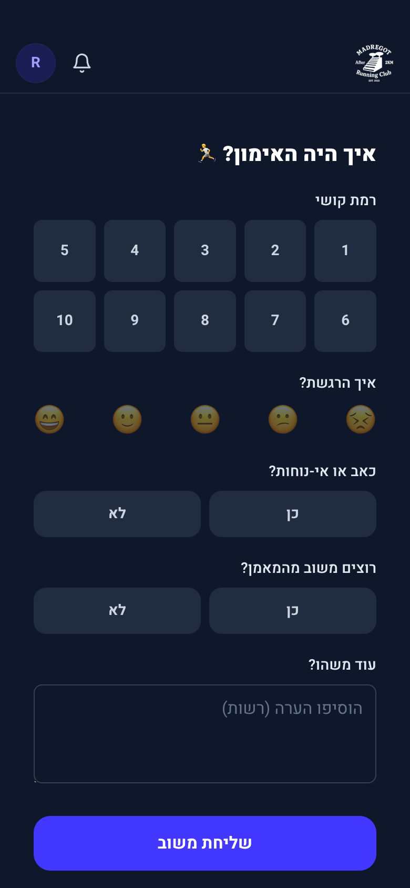
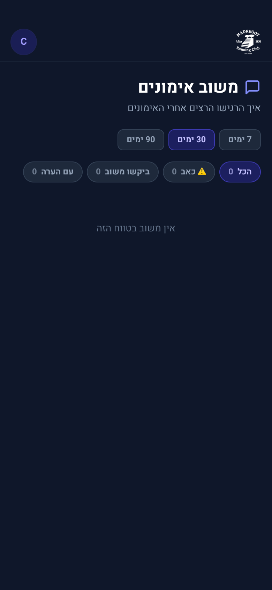
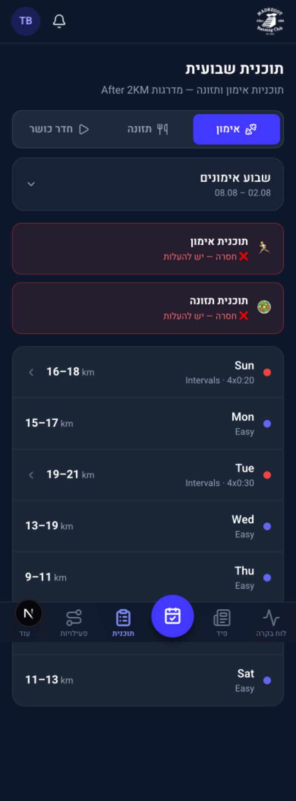
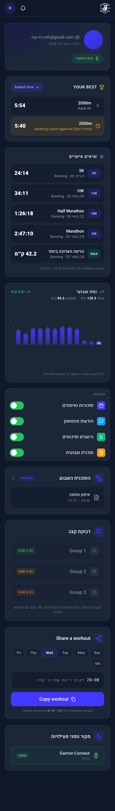
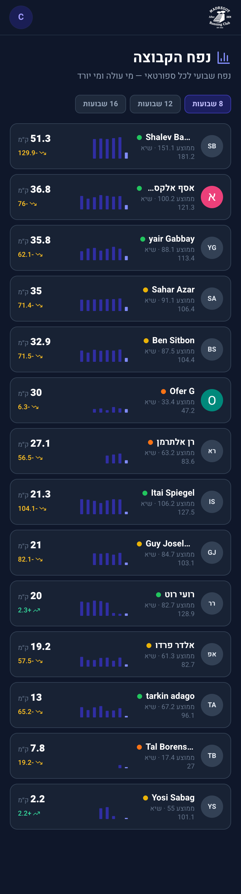
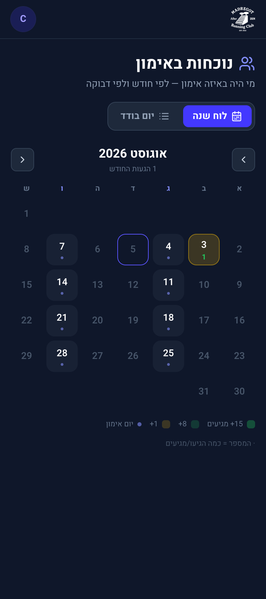
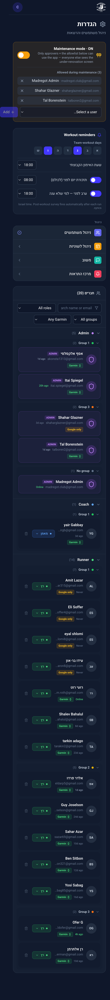
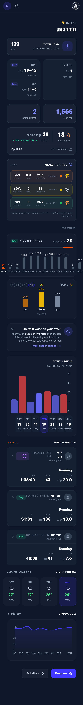

כל 22 היכולות של האפליקציה — מה חי, מה חסום, מה בפיתוח ומה מתוכנן
מבוסס על מחקר על שתי אפליקציות ייחוס: Talos Barbershop (אפליקציית תורים חיה — נבדקה ישירות דרך צילומי מסך) ו־ My Disney Experience (App Store + ידע כללי) — עם תובנה מרכזית משותפת לשתיהן: לרכז "מה הבא שלי" לכרטיס אחד עם פעולות מוטבעות, במקום לפזר את המידע על כמה מסכים.
כל 5 השיפורים אומתו: 0 שגיאות typecheck/lint, 134/134 טסטים עוברים. עדיין לא הועברו ל-commit.
נבדק לפני תיקון (לא ניחוש) — שני סבבי audit על הקוד + שאילתות live ל-DB. הבעיה המרכזית לא הייתה עומס-שרת אלא רצף בקשות מיותר בטעינת הדשבורד וחסר-cache על נתונים שסבלנות של דקה-שתיים בהם לא מורגשת.
/api/dashboard/stats מ-8 שאילתות עוקבות ל-1 batch + 1 תלויהאותר בנוסף (לא תוקן — פרויקט אסטרטגי): כל 60+ המסכים מוגשים כ-Dynamic (0 עמודים סטטיים), כי root layout קורא cookies() לכל בקשה עבור next-intl. זה התקרה האמיתית הגדולה ביותר — דורש שינוי ארכיטקטוני (middleware/[locale] segment), לא תיקון מהיר.
צ׳אט אמיתי בין רץ למאמן דרך Stream Chat, בנוי ב־100% אבל חסום על חשבון GetStream שלא נוצר עדיין. שאלון המשוב האוטומטי אחרי אימון עובד כבר היום.


עודכן 21.08 (רדיזיין אמיתי, לא רק ניקוי כפתורים): מסך "אימון" הפך מ-PDF בתוך iframe למסך native — כרטיסיות יום-ביום (א׳-ש׳) עם מרחק/סוג אימון/נקודה צבעונית, בנויות על הנתון המפורק (weekly_plans) ולא על ה-PDF הגולמי. לחיצה על יום עם אימון מפתחת את אותו Sheet עם פירוק שלבים מלא (חימום/אינטרוולים/קירור + קצב לכל קבוצה) שכבר קיים בדשבורד — קוד משותף אחד, לא שני מימושים. בורר השבועות עצמו מאחד גם שבועות שקיימים רק כ-JSON מפורק (בלי PDF) עם אלו שהועלו כ-PDF — כך שבוע עם תוכנית מפורקת אבל בלי PDF עדיין מציג תוכן אמיתי במקום "חסר". תזונה נשארה PDF (אין עדיין מודל מבני לתזונה) — עם הודעת "אין תוכנית" נקייה כשחסר.

21.08: מיגרציית feed_items הודבקה בהצלחה ✓ (feed_items/likes/comments חיים ב-DB, 1,718 פעילויות קיימות backfilled אוטומטית) — כל מה שנשאר הוא push+deploy של הקוד. בנוסף נבנה מסך חדש: "עורך פעילות" בסטייל Strava שנפתח מיד לאחר סנכרון — כותרת/תיאור, קהל (כולם/רק אני — "עוקבים" מנוטרל, אין עדיין גרף עוקבים), הסתרת שדות (קלוריות/דופק/קצב/הספק), הוספת תמונה.
נבנה במלואו (Phase 3) — לא מוקאפ יותר. טבלת events גנרית (race/camp/lecture/social/photo_shoot/sponsor/workout) חיה ב-DB, מיגרציית 055 אומתה כמיושמת. מסך יומן אמיתי: רשת חודשית + נקודות לפי סוג, טופס הוספת אירוע לאדמין. מחכה ל-push+deploy בלבד.
בניגוד לצ׳ק־ליסט — לא קיים כלל היום, אפילו לא גרסה בסיסית. Phase 8 בגלל תלות עסקית/עלות נמוכה.
בניגוד לצ׳ק־ליסט (שסימן "חסר") — כבר בנוי ועובד. יצירת תמונה מלאה בצד הלקוח (canvas), ללא תלות שרת.
21.08: עמוד הפרופיל עוצב מחדש בסטייל iOS-Settings (מסך נחיתה → מסכי פירוט), עם טאב "מדליות" חדש. גיל/מגדר/מידת נעל נבנו וחיים ב-DB — אך במתכוון בהגדרות (Personal Info), לא על מסך הפרופיל, ששומר בכוונה על נחיתה מצומצמת (תמונה/שם/אימייל/חבר-מאז בלבד). סטטיסטיקות (אימונים/ק״מ/רצף) עדיין רק בדשבורד.

גיל/מגדר לא משמשים לסינון לוחות מובילים — נתוני פרופיל בלבד, לפי בקשה מפורשת.
נבנה במלואו (Phase 3) — דף אירוע ייעודי אמיתי ב-/dashboard/calendar/[id], לא row-expand יותר. כל מה שמתואר במוקאפ למטה קיים בקוד בפועל: תיאור, לו״ז, קישור וויז (נגזר מ-lat/lng אם אין waze_url), ציוד, רשימת נרשמים (אווטארים), הרשמה+בר קיבולת, אקורדיון FAQ חדש שנבנה מאפס (לא היה ברכיבי האפליקציה קודם).
מרוץ השנתי הגדול של תל אביב — מסלול לאורך החוף, עם תחנות מים כל 2.5 ק״מ ואווירה קהילתית.
חולצת ריצה, מדליה, ביטוח וגישה לתחנות מים.
יום שישי 14:00–20:00 במשרדי המועדון.
אין שום תלות תשלומים בקוד היום — Phase 7 מחייבת בחירת ספק סליקה (סטרייפ מומלץ).
אותה טבלת feed_items שסעיף 3, ואותה מיגרציה שהודבקה 21.08 — פוסטים חופשיים עם תמונות, לייקים ותגובות. תיוג חברים נדחה (deferred) בכוונה.
נבנה במלואו 21.08: קטלוג 11 מדליות + טבלת הענקה (מיגרציית 059, מחכה להדבקה), מנוע הענקה אוטומטי (5 סוגי חוק: שיא-מרחק/מרחק-מצטבר/זמן-מצטבר/רצף/מרוצים/נוכחות מושלמת), פוסט חגיגי בפיד + פוש, וכלי ניהול לאדמין ליצירת מדליות חדשות (לפי ק״מ או שעות, עם העלאת תמונה).
21.08: נוספו לוח "רצף" ולוח "מספר אימונים" (טאבים באותו מסך, ליד לוח המרחק הקיים) — כולם real-time, לא מוקאפ. סינון גיל/מגדר נשאר במתכוון בחוץ: לפי בקשה מפורשת, אלו נתוני פרופיל בלבד ולא משמשים לסינון לוחות.

נבנה אחרי שלב ההישגים (Phase 4) כי מנגנון הפרסים תלוי בפרימיטיב מדליות שעדיין לא קיים.
21.08: הבדיקה האוטומטית נבנתה — גרסת v1 מכוונת (לא donut % מדומיין): אם ספורטאי אישר "מגיע" ויש לו ריצה מסונכרנת באותו יום קלנדרי, הרשומה מסומנת "מאומתת" ✓ ברשימת המאמן. לפי בקשה מפורשת: אין חלון-זמן מדויק מול שעת האימון ואין מצבי no-show/walk-in נפרדים ב-v1 — התאמה יומית פשוטה.

8/12 מאומתים — RSVP + ריצה תואמת אותו יום.
נבנה במלואו (Phase 3) — event_registrations חי, כולל לוגיקת קיבולת+רשימת המתנה אמיתית: מבטל "registered" מקדם אוטומטית את הבא בתור מ-"waitlisted" (לפי created_at). אומת ידנית: הרשמה חוזרת לא סופרת את הרשומה של המשתמש עצמו בחישוב הקיבולת.
עודכן 20-21.08: ניסוח מדויק וממוקד-זמן לכל ההתראות (שם יום, ספירת RSVP, סוג אימון, שם המאמן) + בקשת Push עברה לבקשה-בהקשר. חדש: לוגו לפי שולח (מאמן = תמונת המאמן, כללי/מערכת = לוגו מדרגות, tag יציב כך שהתראות חוזרות מחליפות ולא נערמות) + מרכז ההתראות באפליקציה עבר לקיבוץ לפי קטגוריה (אימונים/מאמן/הישגים/תוכנית) עם כותרות מתקפלות וכפתור "נקה" לכל קבוצה — בדיוק בסטייל ה-iOS שהוצג. עוד חסר: פוש על לייק/תגובה בפיד ועל הישג חדש.
אחרון בתוכנית — מאנדקס ישויות (חברים/פוסטים/אירועים/חנות) שצריכות להתייצב בצורה לפני שכדאי לבנות עליהן חיפוש.
21.08: נוספו שתי שורות ניהול חדשות בהגדרות — "מידע אישי" (חי, תאריך לידה/מגדר/מידת נעל, self-service) ו"ניהול מדליות" (חי, ראו סעיף 11). פרטיות (חוסם/visibility) נשארת בתכנון — תלויה ב-Phase 6 (גילוי חברים), אין מה להיות פרטי ממנו לפני שיש פרופיל ציבורי.

21.08: ספירת מרוצים נבנתה — התאמה אוטומטית בין athlete_activities ל-events(kind='race') לפי תאריך, עם תיקון ידני, מוצג במסך "שיאים" בפרופיל (ראו race_matches). שיא נפח חודשי (לא שבועי) וימי פעילות מול מנוחה — עדיין לא נבנו.

לפי docs/feed-plan.md — תוספת קלה מעל feed_items ("טבלת follow + WHERE clause"), אבל ממוקמת אחרי Phase 4 כדי שיהיו מדליות להציג בפרופיל הציבורי.
21.08: כפתורי Google ו-Apple נבנו במלואם — signInWithOAuth אמיתי, מנותב דרך /auth/resolve (אומת מול הגרסה המותקנת של supabase-js: flowType='implicit' כברירת מחדל, לא PKCE). חסום רק על הפעלת ה-provider בדשבורד Supabase (Google + Apple, כל אחד עם קרדנציאלס משלו) — אין עוד שורת קוד חסרה.
נבדק בקוד: קיימים היום שני זרמים לא-מחוברים — (1) קישור הזמנה מהמאמן ← הזנת שם-משתמש/סיסמה של גרמין ידנית (המקורי), (2) כפתור "התחברות עם Strava" בעמוד הנחיתה ← יוצר חשבון ישירות דרך Strava OAuth. Google קיים בקוד (resolve-role) אך אין לו כפתור בשום מקום — רדום לחלוטין. כל 22 החברים הפעילים כיום הם על גרמין; 0 קישרו Strava. מנהל יכול להחליף מקור-נתונים (גרמין↔Strava) פר-ספורטאי מ־Settings, אך זו פעולת אדמין, לא self-service.
Google: קיים בקוד, ⚪ בלי כפתור — אף אחד לא יכול להשתמש בו.
גישה מלאה לפיד/צ׳אט/RSVP/אירועים ללא חסימה; אימונים מוזנים ידנית (תאריך/מרחק/זמן); תזכורת עדינה ולא-חוסמת ב-Settings לחבר מאוחר יותר.
הבעלים בחר לבדוק את זרם ה-Strava הקיים כמו שהוא הערב, ולדחות את החלטת Google-כראשי להמשך נפרד — הדיאגרמה הזו היא קלט להחלטה, לא שינוי שנבנה.